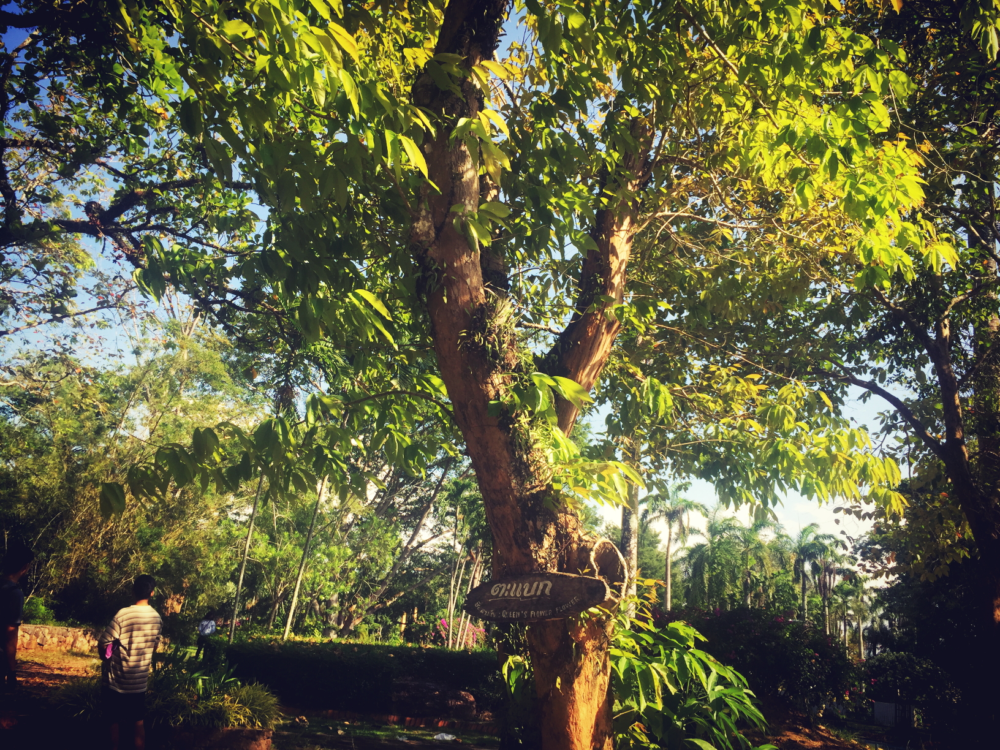

Lagerstroemia calyculata (ต้นตะแบก)
ประวัติ
ต้นตะแบก จัดเป็นพรรณไม้ยืนต้นกึ่งผลัดใบขนาดกลางถึงขนาดใหญ่ มีความสูงได้ประมาณ 15-35 เมตร เรือนยอดเป็นรูปเจดีย์ต่ำ ๆ แตกกิ่งก้านสาขาออกรอบต้น เปลือกลำต้นเกลี้ยงเป็นสีเทาอมเหลือง หรือสีน้ำตาลอมเทา มีรอยขรุขระเป็นหลุมตื้น ๆ เกิดจากสะเก็ดแผ่นบาง ๆ ของเปลือกที่หลุดร่วงไป ดูคล้ายกับเปลือกต้นฝรั่ง แต่จะมีจุดด่างขาว ๆ อยู่ตามลำต้น ทางตอนบนของลำต้นจะค่อนข้างเรียบ ส่วนเปลือกชั้นในเป็นสีชมพูอมม่วง ซ้อนกันเป็นชั้น ๆ สลับกับชั้นลายเส้นสีขาว โคนต้นเป็นพูพอนชัดเจน ตรงส่วนที่เป็นพูพอนมักจะกลวงขึ้นไปประมาณ 3-5 เมตรจากผิวดิน ตามกิ่งอ่อนมีขนสีน้ำตาลสาก ๆ ขึ้นหนาแน่น เนื้อไม้มีความแข็งประมาณ 628 กก. ความถ่วงจำเพาะประมาณ 0.68 ความแข็งแรงประมาณ 1,219 กก./ตร.ซม. ความเหนียวประมาณ 2.89-กก.-ม. ความดื้อประมาณ 112,700 กก.ตร.ซม. และมีความทนทานตามธรรมชาติ ตั้งแต่ 3-17 ปี เฉลี่ยประมาณ 9.4 ปี อาบน้ำยาไม้ได้ยากมาก (ชั้นที่ 5) ขยายพันธุ์ด้วยเมล็ด พบขึ้นในป่าราบ ป่าดงดิบ และป่าเบญจพรรณชื้นและแล้งทั่วไปทางภาคเหนือ ภาคกลาง ภาคตะวันออก ภาคตะวันออกเฉียงเหนือ และภาคตะวันออกเฉียงใต้ ที่มีความสูงจากระดับน้ำทะเลประมาณ 100-400 เมตร พบได้มากที่ป่ายุบศรีราชา (ต้นตะแบกที่ขึ้นในป่าดงดิบจะไม่ผลัดใบ)

ลักษณะ
ตะแบกเป็นไม้ต้น ผลัดใบ เรือนยอดเป็นพุ่มกลม โคนต้นเป็นพูพอนสูง เปลือกต้นเรียบเป็นมันสีเทาหรือสีเทาอ่อนอมขาว มีแผลเป็นหลุมตื้น ๆ ตลอดลำต้น ใบ (Foliage) : ใบเดี่ยว เรียงตรงข้าม ใบรูปใบหอก กว้าง 5-8 เซนติเมตร ยาว 12-20 เซนติเมตร ปลายใบแหลม โคนใบรูปลิ่ม ชอบใบเรียบหรือเป็นคลื่นเล็กน้อย แผ่นใบหนา ใบเเก่เกลี้ยง ใบอ่อนสีชมพูหรือแดง มีขนสั้น ดอก (Flower) : สีชมพูอ่อนหรือม่วงอ่อน ออกเป็นช่อแบบช่อเเยกแขนงตามซอกใบปลายกิ่ง ช่อดอกยาว 30-40 เซนติเมตร ก้านช่อดอก และดอกตูมมีขนสีน้ำตาลอ่อนปกคลุม กลีบเลี้ยงมี 10-12 สัน ปลายแยก 5-6 กลีบ มีขนสีน้ำตาลด้านนอกและปลายกลีบด้านใน กลีบดอก 6 กลีบ ดอกบานเต็มที่กว้าง 2.5-3.5 เซนติเมตร ผล (Fruit) : ผลแห้งแตก รูปไข่สีน้ำตาล เเตกเป็น 5-6 พู เมล็ดแบน สีน้ำตาล มีปีก